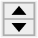

Macro Rotate To Point/it
| Descrizione |
|---|
| Nuva versione GUI modicato per HD dpi (QGridLayout) funziona solo su FC version 0.18 e più alto (PySide2 Qt5) Questa macro fa ruotare un oggetto su se stesso intorno all'asse scelto. Si puo salvare in un file tutte le coordinate lavorate e salvarlo in un file "Coordinate [(0.06,1.30,0.0), (85.0,0.0,0.0)]" o in una macro completa per creare un'animazione Per la precedente versione vedi Macro_Rotate_To_Point e installa manualmente. Versione macro: 00.09 Ultima modifica: 2021/02/25 Versione FreeCAD: 0.18 e più Download: ToolBar Icon Autore: Mario52 |
| Autore |
| Mario52 |
| Download |
| ToolBar Icon |
| Link |
| Raccolta di macro Come installare le macro Personalizzare la toolbar |
| Versione macro |
| 00.09 |
| Data ultima modifica |
| 2021/02/25 |
| Versioni di FreeCAD |
| 0.18 e più |
| Scorciatoia |
| Nessuna |
| Vedere anche |
| Nessuno |
{kind=link}
{kind=link}
Descrizione
Macro per far ruotare un oggetto su se stesso scegliendo l'asse di rotazione: il centro del bounding box, il centro di massa, la direzione, un percorso lungo una linea o l'ultimo punto cliccato. È necessario salvare in un file tutte le coordinate utilizzate e salvarle nel file come "Coordinate [(0.06,1.30,0.0),(85.0,0.0,0.0)],"
oppure in una macro completa con diverse opzioni (Crea immagine seriale) per creare un'animazione, aumentare/diminuire, mettere in pausa, effetto yo-yo ....
Temporary code for external macro link. Do not use this code. This code is used exclusively by Addon Manager. Link for optional manual installation: Macro
# This code is copied instead of the original macro code
# to guide the user to the online download page.
# Use it if the code of the macro is larger than 64 KB and cannot be included in the wiki
# or if the RAW code URL is somewhere else in the wiki.
from PySide import QtGui, QtCore
diag = QtGui.QMessageBox(QtGui.QMessageBox.Information,
"Information",
"This macro must be downloaded from this link\n"
"\n"
"https://gist.githubusercontent.com/mario52a/2fc48333deca5a31e6232c29a9db5e4c/raw/d9419d4bb13e36940eb2f56c3c469ea4182827ee/Macro%2520Rotate%2520To%2520Point.FCMacro" + "\n"
"\n"
"Quit this window to access the download page")
diag.setWindowFlags(QtCore.Qt.WindowStaysOnTopHint)
diag.setWindowModality(QtCore.Qt.ApplicationModal)
diag.exec_()
import webbrowser
webbrowser.open("https://gist.githubusercontent.com/mario52a/2fc48333deca5a31e6232c29a9db5e4c/raw/d9419d4bb13e36940eb2f56c3c469ea4182827ee/Macro%2520Rotate%2520To%2520Point.FCMacro")
Uso
- Caricare la macro con l'Addon Manager
- Lanciare la macro
- Clicccare un oggetto
- Selezionare uno dei seguenti orientamenti:
{kind=link}
[1] Posizione Rotazione
Prima operazione
{kind=link}
 Translation: If this checkBox is
Translation: If this checkBox is  checked the rotation is disabled, the object placement is done on the axis selected.
checked the rotation is disabled, the object placement is done on the axis selected.
The SpinBox 1,00000 Degrees 0.0 and coloured in red
{kind=link}
- The time passed with your favourite macro is displayed.
[2] Translation Rotation
Second operation
{kind=link}
Point Rotation
- Bounbox Center : Seleziona come asse di rotazione il centro del BoundBox
- Center of Mass : Seleziona come asse di rotazione il Centro di massa
- Point Clicked : Seleziona come asse di rotazione l'ultimo punto cliccato 1: Selezionare l'oggetto 2: usare il tasto CTRL per scegliere un punto esterno all'oggetto
- 1: seleziona uno obietto
- 2: utilizza CTRL per scegliere un oggetto in più
Axis Rotation
- Rotation(Z) Yaw : asse Yaw
- Rotation(Y) Pitch : asse Pitch
- Rotation(X) Roll : asse Roll
- Rotation(D) Direction: Ruota intorno alla linea, filo selezionato
Coordinates Point clicked
- DoubleSpinBox : Coordinate X del clic del mouse (modificabile solo nel modo "Point Clicked")
- DoubleSpinBox : Coordinate Y del clic del mouse (modificabile solo nel modo "Point Clicked")
- DoubleSpinBox : Coordinate Z del clic del mouse (modificabile solo nel modo "Point Clicked")
Work
Third operation
{kind=link}
- Translation: Se questo checkBox è checked la rotazione è disabilitata, il posizionamento dell'oggetto viene eseguito sull'asse selezionato.
- Point: viene creato un punto per visualizzare l'asse di rotazione del punto: X rossa, Y verde, Z blu
- Line Edit: la modifica della linea mostra la coordinata originale dell'asse selezionato + i dati di input forniti nella casella di selezione
- 0,0000 : immettere la modifica
- Apply: applica la modifica all'oggetto
- La coordinata viene visualizzata
Data
{kind=link}
- Finestra per la visualizzazione delle coordinate memorizzate
- Save: salva i dati nel file
- Clear: elimina e pulisci l'editor di testo
- Delete: elimina la riga selezionata
- Memorize: memorizza e visualizza le coordinate
- Macro:
- Modalità normale Macro la coordinata viene salvata in questa modalità: [(0.06,1.30,0.0), (85.0,0.0,0.0)],
- Modalità macro 0,0 Coordinate la coordinata viene salvata in una macro completa direttamente nella directory delle macro con lo stesso nome dell'estensione del documento .FCMacro
- Opzioni della macro
- __ pompe____engrenage__: Nome del documento
- __ 22 Coordinates__: numero di coordinate
- Digita il tasto Q per uscire: Esci dalla macro
- Digita il tasto D per diminuire la velocità: Diminuisci la velocità dell'animazione
- Digita il tasto I per aumentare la velocità: Aumenta la velocità dell'animazione
- Digitare il tasto P per mettere in pausa/continuare o il tasto RETURN o ESCAPE: Pausa/Anime
- Digitare il tasto S per procedere passo dopo passo (tasto RETURN o ESCAPE per continuare): Passo dopo passo
- Digitare la chiave M per questo messaggio: Visualizza questo memo
- ____________________________
- Modalità normale
- Memo on Click:
- Modalità normale Memo on Click: i dati non vengono salvati sulla finestra, è necessario premere il pulsante Memo (2) per salvare le coordinate
- Modalità Memo on Click Memo on Demand: i dati vengono salvati automaticamente facendo clic sul pulsante Apply
- Modalità normale
Command
{kind=link}
- Quit: chiude la macro
- Original: dopo aver modificato i dati dell'oggetto puoi tornare alla posizione originale, se non hai deselezionato l'oggetto corrente.
- 0,0,0: questa opzione posiziona l'oggetto nella coordinata di base
0, 0, 0 - Reset: reimposta i dati nella macro e deseleziona l'oggetto corrente (stesso clic del mouse nella vista 3D)
{kind=link}
Esempi
{kind=link}
Links
Link
Le mie macro su Gist mario52a
Versione
2022/10/17 Version=00.11 : new organization GUI, Follow the path, View on object, Button Copy, adding menu Image on macro saved, add "QtWidgets.QScrollArea()"
2021/03/08 Version=00.10 : adding zoom on object clicked, memory value, imposted values
2021/02/25 Version=00.09 : correct the macro : cause multi object possible
App.ActiveDocument.getObject(p[0]).Placement
instead
myObject.Placement
2021/02/22 Version=00.08c : correct the center facePoint (19h26 Paris)
2021/02/22 Version=00.08b : correct the center facePoint (17h23 Paris)
2021/02/22 Version=00.08 : adding save macro with multi objects moved
2021/01/24 Version=00.07 : adding option R: reverse
2021/01/12 ver 00.06 : adding the Data section and more options
2020/03/07 ver 00.05.2 : corretto il bug translation delete "direction = myObject.Placement.Rotation.multVec(direction)"
2020/03/01 ver 00.05.1 : corretto la posizione del test "FreeCAD version"
2020/02/29 ver 00.05 : conversione per Hdpi (Layout) e aggiunto Direction
06/04/2019 ver 00.04 : Python 3
29/03/2018 ver 00.03 : commento delle linee "FreeCAD.ActiveDocument.recompute()" il cambiamento di posizione e tropo lento con la versione di FreeCAD 0.17.... vedere FC0.17 recompute strange behaviour (regression)
27/03/2017 ver 00.02 : modificazione dello spinbox "Pos" adesso accetta i numeri negativi
05/03/2017 ver 00.01 : agggiunto 3 spinbox per visualizzare le coordinate X Y Z del clic del mouse
04/03/2017 ver 00.00